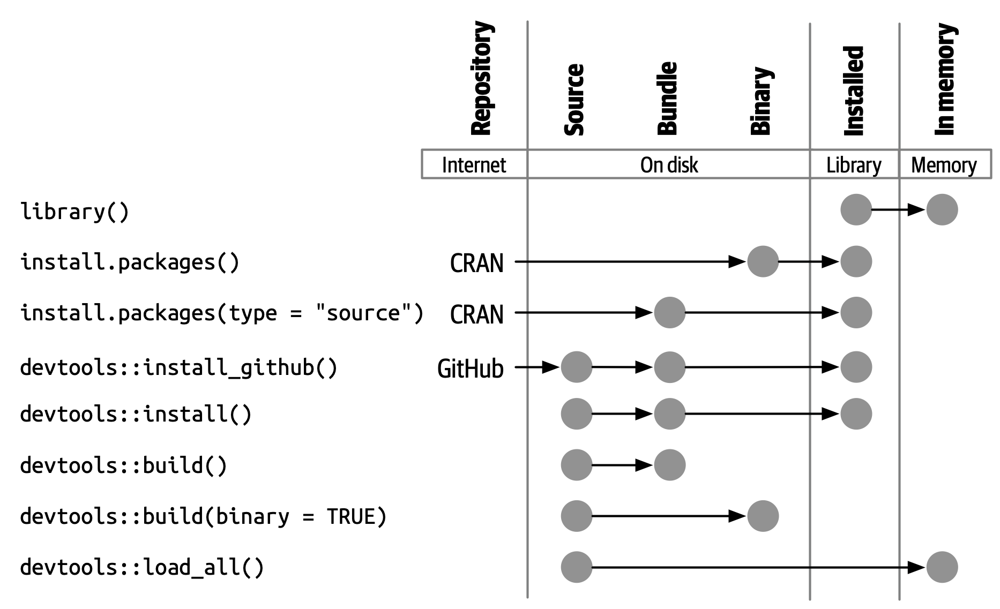
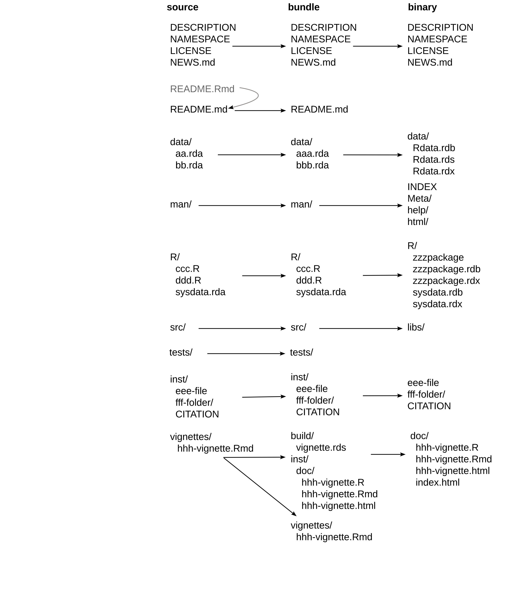
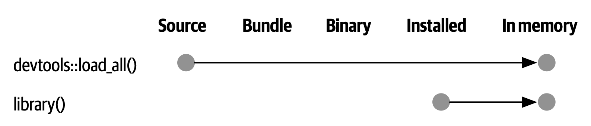
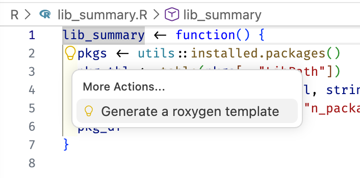
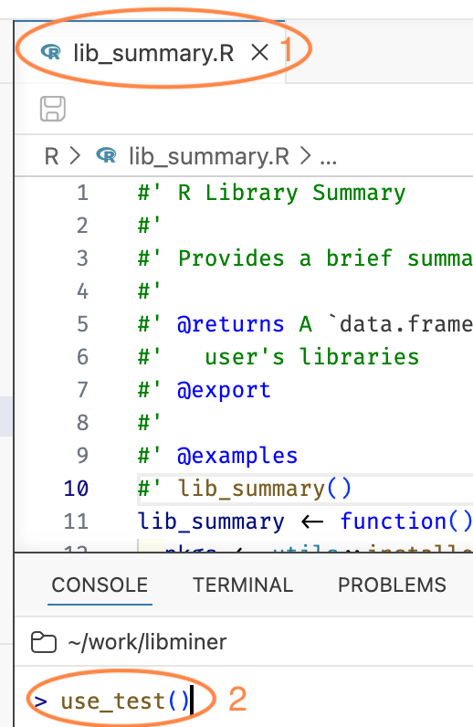
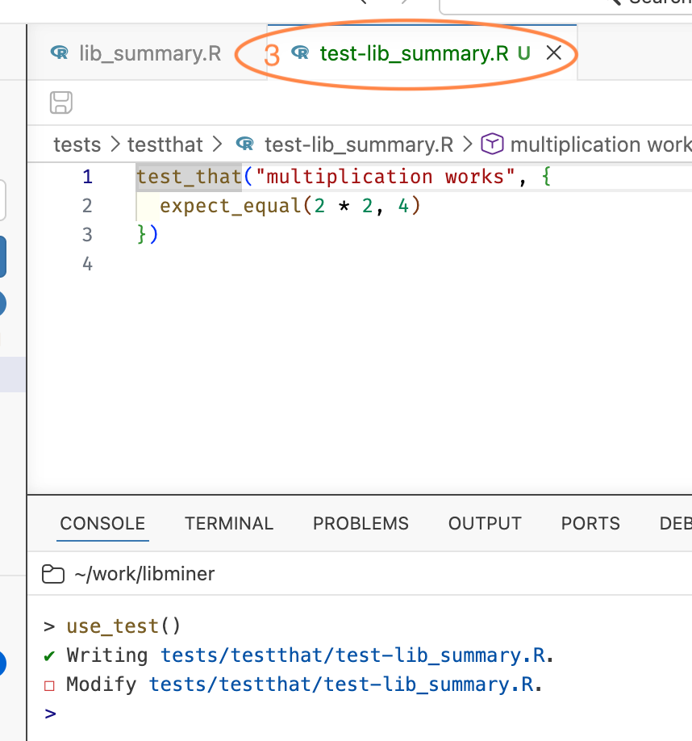
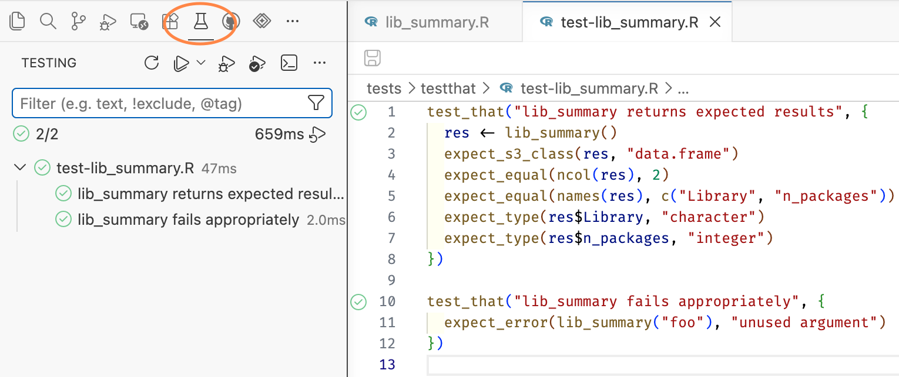
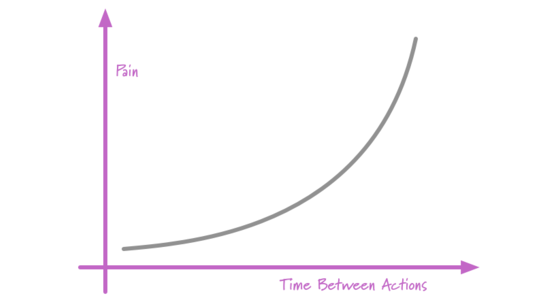
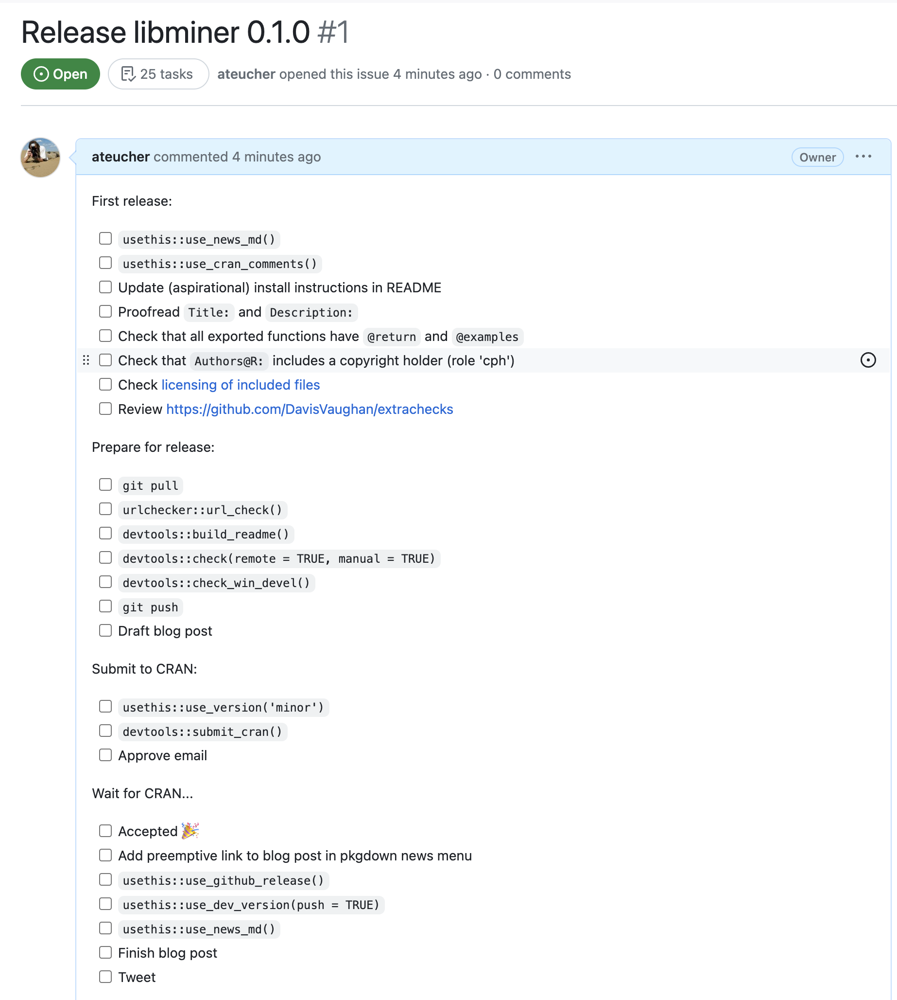

The Whole Game
r-base-dev)Git and GitHub are optional but strongly recommended.
I recommend rig, the R Installation Manager:
rig add releaseIt handles the fiddly parts, steers you into best practices, and lets you keep several versions of R side by side.
devtools is a meta-package, so usethis, roxygen2, testthat, and pkgdown all come along.
I personally use pak for all package management:
Is my system ready to develop packages?
Do R, Git, and GitHub understand each other?
You want a name, an email, and a PAT reported as <discovered>.
Everything here works in RStudio too. The commands are all devtools and usethis calls, which are IDE-agnostic.
But we will lean on Positron’s package development affordances, which live in the Command Palette and behind keyboard shortcuts.
We will:
Half a day is enough for the whole game, once. Depth comes later.
libminer, a toy package that tells you about your R libraries.


library(pkg) attaches a package from a libraryThat is the raw material for the package we are about to build.
create_package()Pick a location that makes sense to you. Not inside another package or Git repo!
libminer
├── .Rbuildignore
├── DESCRIPTION
├── NAMESPACE
├── R
└── libminer.Rprojuse_git()use_github()Creates a GitHub repo and pushes your package to it.
Prerequisites: a GitHub account, and credentials that work. That is what git_sitrep() was for.
use_devtools()Adds a line to your .Rprofile so devtools is attached in every interactive session. Paste, save, restart R.
Skip it if you prefer, then just call library(devtools) after each restart.
create_package()use_git(), then use_github()use_devtools() and restart Ruse_r()R/Tempting, but no:
source("R/lib_summary.R")Do this instead:
load_all()
Simulates building, installing, and attaching your package.
load_all() is the single most common thing you do.
Worth committing to muscle memory.
use_r("lib_summary")lib_summary() in that fileload_all(), then call lib_summary()check()Runs R CMD check, the official checker, from within R.
check() in the console (the command / keyboard shortcut is better, tho)Check early, check often. “If it hurts, do it more often.”
For CRAN, try to get to zero of all three.
DESCRIPTION fileYour package’s metadata. Edit along these lines:
Package: libminer
Title: Explore Your R Libraries
Version: 0.0.0.9000
Authors@R:
person("Jane", "Doe",
email = "jane.doe@something.com",
role = c("aut", "cre"),
comment = c(ORCID = "XXXX-XXXX-XXXX-XXXX"))
Description: Provides functions for learning about your R libraries, and the
packages you have installed.DESCRIPTION detailsTitle: one line, title case, no full stopDescription: full sentences, ends with a full stop, does not start with “A package for”Authors@R is unusual: it holds executable R codeuse_*_license()
use_mit_license()✔ Adding 'MIT + file LICENSE' to License
✔ Writing 'LICENSE'
✔ Writing 'LICENSE.md'
✔ Adding '^LICENSE\.md$' to '.Rbuildignore'Then check again.
check() and read the outputDESCRIPTION with your own detailsuse_mit_license()check() again, then commit and pushman/*.RdHelp files live in man/ and are written in an Rd markup language.
You will not write them by hand. You write roxygen comments next to your code, and roxygen2 generates the .Rd files.
Special comments starting with #' above a function definition:
@param for each argument@returns for the return value@export to make it public@examples for usageDocumentation lives with the code.

document()Turns roxygen comments into man/*.Rd and updates NAMESPACE.
document() in the console (the command / keyboard shortcut is better, tho)Then preview:
NAMESPACELists the R objects that are:
export(), S3method()import(), importFrom()document() maintains this file for you. Do not edit it by hand.
Edit roxygen, document(), ?fun, repeat.
Add it to the loop you already have:
load_all(), Cmd/Ctrl + Shift + Ldocument(), Cmd/Ctrl + Shift + Dcheck(), Cmd/Ctrl + Shift + EA landing page for the package as a whole. Then check again.
install()Installs your package into your library, for real.
Your package’s home page on GitHub. Cover:
Then render README.Rmd to README.md:
build_readme() renders against the current source of your package.
document(), and read your own help pageuse_package_doc() and document() againinstall() and use your package like a user woulduse_readme_rmd(), fill it in, build_readme()You are already testing informally, every time you load_all() and try something out.
Formal tests make that permanent: they run every time, in a fresh session, on every platform.
use_testthat()Suggeststests/testthat/tests/testthat.RYou still have to write the tests.
use_test()Better: with R/lib_summary.R open in the editor, call use_test() with no arguments. usethis creates and opens the companion test file.


use_r() is the inverse, for jumping back the other way.
test-*.R, mirroring R/test_that("description", { ... }), one unit of functionalityexpect_*(), one specific comparisonFailure reports quote the description, so make it informative.
test() in the consoleA tree of your test files and test_that() blocks, with pass and fail marks on each one.

R: Test R Package in Terminal gives you plain console output instead.
load_all(), Cmd/Ctrl + Shift + Ltest(), Cmd/Ctrl + Shift + Tdocument(), Cmd/Ctrl + Shift + Dcheck(), Cmd/Ctrl + Shift + Euse_testthat()use_test() with R/lib_summary.R opencheck(), commit, pushLet’s report the on-disk size of each library, using the fs package.
library() in code below R/Imports in two filesImports: in DESCRIPTION does not “import” itImports: may, but need not, appear in NAMESPACENAMESPACE must be in Imports: (or Depends:)pkg::fun(), always fine, always explicit#' @importFrom pkg fun1 fun2, for functions you use constantly#' @import pkg, the whole package. Rarely a good ideaWe will use pkg::fun().
lib_summary <- function(sizes = FALSE) {
pkgs <- utils::installed.packages()
pkg_tbl <- table(pkgs[, "LibPath"])
pkg_df <- as.data.frame(pkg_tbl, stringsAsFactors = FALSE)
names(pkg_df) <- c("Library", "n_packages")
if (sizes) {
pkg_df$lib_size <- fs::as_fs_bytes(vapply(
pkg_df$Library,
function(x) {
sum(fs::dir_info(x, recurse = TRUE, type = "file")$size)
},
FUN.VALUE = numeric(1)
))
}
pkg_df
}Seems to work!
Run the tests and one of them fails. This is the system working as designed.
Update the test, and add one for the new behaviour:
check() disagrees tooA warning about an undocumented parameter, sizes.
Then document() and check again.
0 errors ✔ | 0 warnings ✔ | 0 notes ✔use_package("fs")sizes argumentsizes, document(), check()use_github_action()If your code is on GitHub, GitHub Actions can check your package on three operating systems every time you push.
Choose check-standard.
.github/workflows/R-CMD-check.yamlREADME.RmdSo re-render the README:
The config has to be on GitHub to take effect.
Admire the badge, and your automatic multi-platform check results.
use_github_action()build_readme()check(), commit, pushuse_pkgdown_github_pages()Commit and push.
That is all you need to publish a beautiful website for your package.
Assuming that:
use_pkgdown_github_pages()install.packages(), and stringent requirements“If it hurts, do it more often.”

check() often, aiming for zero errors, warnings, and notesuse_release_issue()Opens a GitHub issue with a checklist for preparing a CRAN release.

Run once
create_package(), use_git(), use_github(), use_devtools(), use_mit_license(), use_testthat(), use_readme_rmd(), use_package_doc(), use_github_action(), use_pkgdown_github_pages(), use_release_issue()
Run periodically
use_r(), use_test(), use_package(), build_readme(), install()
| Function | Positron command | Shortcut |
|---|---|---|
load_all() |
R: Load R Package | Cmd/Ctrl + Shift + L |
document() |
R: Document R Package | Cmd/Ctrl + Shift + D |
test() |
R: Test R Package in Test Explorer | Cmd/Ctrl + Shift + T |
check() |
R: Check R Package | Cmd/Ctrl + Shift + E |
install() |
R: Install R Package and Restart R | Cmd/Ctrl + Shift + B |
Workshop site: https://jennybc.github.io/2026_raukr-positron-ai-pkg-dev/
Read next: R Packages (2e)
Gratefully adapted from materials by Andy Teucher for Introduction to R Package Development at posit::conf(2023).